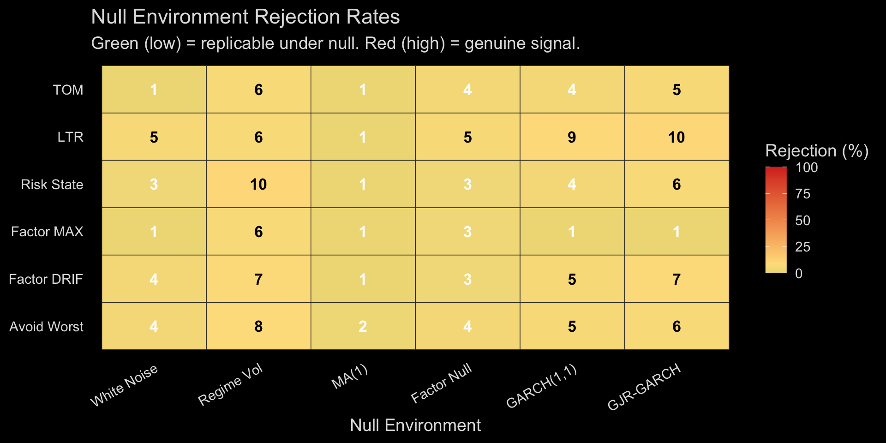
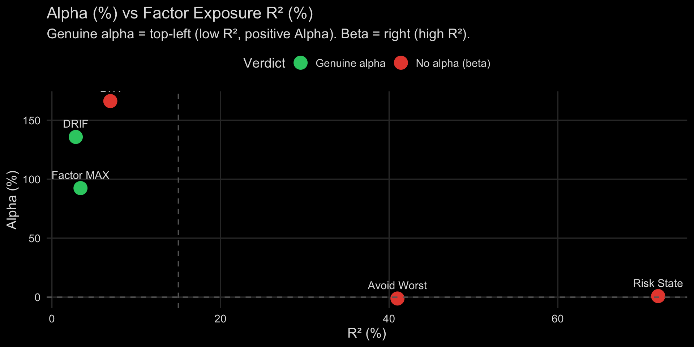
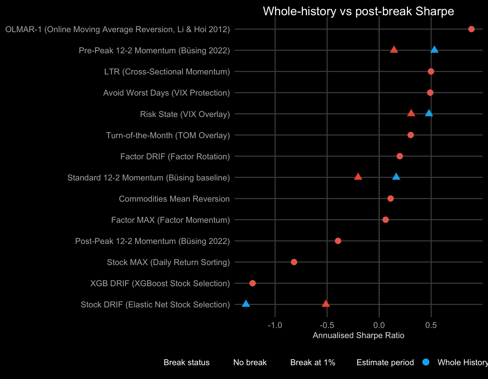

⚠ Survivorship-biased universe. stk_universe now restricts to the top-100 tickers by current market cap (#150 Option C) to limit forward survivorship exposure. Historical backtest results remain survivorship-biased — delisted firms (Lehman, Bear Stearns, Enron, WorldCom, old GM, etc.) were never in the dataset and cannot be reconstructed without point-in-time membership data. Literature estimates residual bias at +1 to +3 pp/year for long-only US equity. See issue #150 for remediation status (Option A — point-in-time data — remains open).
Of 9 strategies with a positive Full-Period Sharpe, 8 are underpowered once corrected for testing 16 strategies (K_eff = 13.7) — 7 already fail the uncorrected, single-test bar; 1 clears both bars. See #726. Rigour-metric coverage (deflated Sharpe / DSR p-value / K_eff), across all 17 leaderboard strategies: 16 full, 0 partial, 1 documented exclusion, 0 undetected gaps. See #728.
The leaderboard above charges each strategy a single, unsourced borrow rate — and, as of #665, assumes zero securities-lending income everywhere (a documented materiality judgement, not a measurement — see lending_status in strategy_cost_convention, R/plan_cost_convention.R). This tab does not correct that number; it measures how much of each strategy’s edge survives if the single borrow-rate assumption is wrong. Two things to read correctly here: the 0% column is a no-financing counterfactual, not a claim that financing is free — do not treat it as “the” answer; and this sweep’s Sharpe omits the risk-free rate (it reports relative deltas across borrow rates, where rf cancels), so its levels are not directly comparable to the leaderboard’s own rf-adjusted Sharpe above — only the delta column is.
Each strategy links to its full definition, implementation, and backtest:
| Strategy | Level | Signal | Definition |
|---|---|---|---|
| Factor MAX | Factor (5 FF) | Max daily return in prior month | Ranks factors by single-day extreme |
| Factor DRIF | Factor (5 FF) | Elastic net on 42 daily return features | Full daily return distribution |
| Stock MAX | Stock (660) | Max daily return, D1-D10 decile spread | Cross-sectional stock sorting |
| Stock DRIF | Stock (660) | Elastic net, D1-D10 decile spread | Pooled cross-sectional elastic net |
| XGB DRIF | Stock (660) | XGBoost monotonic on 42 features | Non-linear signal with monotonic constraints |
| ETF DRIF A | ETF (9) | Elastic net on ETF daily returns | Direct ETF signal, long-only 13.4% CAGR |
| ETF DRIF B | ETF (9) | Academic factor signal → ETF execution | Mapped via ETF_FACTOR_MAP, long-only 12.6% |
| PSO Optimal | Combined | Weighted portfolio of above | Grid search on training Sharpe |
The falsification framework tests 5 strategies against multiple statistical hurdles: HAC-corrected t-statistics, 6 null environment rejection rates, and FF5 + Momentum alpha regression. Strategies that pass all tests show genuine alpha; those that fail are explained by known factor exposure (beta). Note: this covers 5 strategies from the falsification pipeline — partially overlapping with the leaderboard strategies above.
Rejection rates across 6 null environments (M = 100 simulations each). A low rate means the strategy’s performance is easily replicated under the null — no genuine signal. A high rate means the null cannot explain the observed returns.

Scatter plot of annualised alpha (%) against R² (%) from the Fama-French 5-Factor + Momentum regression. Genuine alpha strategies cluster in the top-left (low factor exposure, positive alpha). Beta strategies cluster on the right (high R²).

For detailed methodology, HAC analysis, factor regression betas, multiplicity correction (K_eff, delta-Z), and the full null environment heatmap, see the Strategy Falsification dashboard.

Equity curves (4 factor/stock strategies). Growth of $1, log scale, 16 years (2010–2026). Stock-level strategies lose money net of costs: Stock MAX ends at $0.08 (vol 16%), Stock DRIF at $0.03 (vol 14%). Factor-level strategies survive costs: Factor MAX at $1.03 (CAGR 0.2%, vol 7%), Factor DRIF at $1.24 (CAGR 1.3%, vol 8%). The difference is execution cost, not diversification: stock-level decile sorts produce ~80% monthly turnover across ~130 positions at 0.50%/trade = ~1.85%/month (~22%/yr). Factor-level trades 2–4 positions with ~40% turnover at 0.1%/trade = ~0.08%/month (~1%/yr). Dashed line = test partition start (2020).

PSO optimal vs equal-weight portfolio. Combines all 4 strategies with weights optimised on training partition Sharpe. The PSO optimal tilts toward strategies with better risk-adjusted returns (Factor DRIF + Stock MAX).

XGBoost (monotonic constraints) vs Elastic Net on same 42 DRIF features, stock-level D1-D10. XGBoost underperforms elastic net (-6.3% vs +1.3% full-period CAGR). Monotonic constraints may be too restrictive for cross-sectional returns. See Stock-Level Backtests for full analysis.

::: callout-warning
**Alpha decay not meaningful — base Sharpe is non-positive for every strategy on the page.** Decay measures the *fraction of base Sharpe that survives execution delay*; if base Sharpe ≤ 0 there is no alpha to decay. Investigate the strategies' base Sharpe before re-running this tab. See <a href="https://github.com/JohnGavin/historical/issues/356" target="_blank" rel="noopener noreferrer">#356</a>.
:::

A structural break at date T means the returns process appears to have changed before and after that date — the distribution of vol-normalised returns differs significantly on each side. This is evidence worth investigating, not an automatic allocation trigger.
The resulting-prohibition rule applies directly here: a detected break does not justify revising strategy weights without identifying new structural evidence for why the change occurred. Past underperformance alone is not such evidence — Swedroe documents 12–39-year underperformance episodes for well-established risk premia (underperformance-prior). Conflating a drawdown with a structural change risks abandoning a strategy at exactly the wrong time.
Rob Carver’s empirical finding (2026) is the calibrating prior: across instrument/forecast pairs, only ~13% show breaks at the 1% level, and whole-history estimation often beats break-adjusted estimation out-of-sample. Break-splitting is a guard against over-splitting, not an always-on re-estimator.
For the full framework context see the market-behavior gap analysis (§ Structural Stability), which this section closes (gap now ✅).

long_name from the strategy_names target (plan_strategy_names.R), ordered by whole-history Sharpe ascending. Methodology: iterative forward-split t-test at 1% level with 5-year minimum segment; see hd_structural_breaks(). Caveats: scanning all candidate split dates inflates false-break rate above the nominal 1% level; a detected break is evidence to investigate, not an allocation trigger (resulting-prohibition); whole-history estimation often beats break-adjusted OOS (Carver 2026). Chart type: Cleveland dot plot per visualization-standards (dotchart first choice). Dynamic summary: Structural break analysis (Carver 2026): 4 of 14 strategies show at least one structural break at the 1% significance level. 4 show a material post-break Sharpe divergence (>25% from whole-history Sharpe). Breaks are detected using an iterative forward-split t-test on vol-normalised returns with a minimum segment of 5 years. Material column: “YES” is a break with post-break Sharpe diverging beyond the threshold above; “no” is a strategy that WAS tested and either showed no break or a break too small to call material; “not computed” (0 of 14 strategies) marks a strategy the break test could not run for at all (see its Note column) — that is unassessed, not a passed check. Per the resulting-prohibition rule, a detected break is evidence requiring investigation — not a signal to revise strategy allocation. Per Carver’s own finding, ‘no break’ often wins OOS: break-splitting is a guard against over-splitting, not an always-on re-estimator. Multiple-testing note: scanning all candidate split dates inflates the false-break rate above the nominal 1% level.
| strategy | stk_max | stk_drif | fac_max | fac_drif |
|---|---|---|---|---|
| stk_max | 1.00 | 0.05 | -0.28 | -0.24 |
| stk_drif | 0.05 | 1.00 | -0.05 | 0.14 |
| fac_max | -0.28 | -0.05 | 1.00 | 0.39 |
| fac_drif | -0.24 | 0.14 | 0.39 | 1.00 |
Per backtesting-assumptions rule, all strategies use:
| Assumption | Value |
|---|---|
| Execution | Market close (4 PM ET) |
| Transaction cost | 0.50% per trade (1.00% round-trip) |
| Estimated turnover | 80% per month (decile sort) |
| Short borrow cost | 3% per annum (0.25%/month) |
| Return winsorisation | ±20% per month |
| Cash return | 3-month US Treasury rate (RF from FF3) |
| Dividends | Reinvested (total return basis) |
| Taxes | Excluded (pre-tax) |
Total monthly cost for L/S: turnover × cost × 2 legs × 2 (buy+sell) + borrow = 0.80 × 0.005 × 4 + 0.0025 = ~1.85%/month. This is why most stock-level L/S strategies are unprofitable after costs.
- Strategy Falsification — provides the statistical survival verdict (HAC t-stat, null rejection rate, FF5 alpha) underlying the leaderboard scorecard
- Stock Backtest — per-asset equity-level view of Factor MAX and DRIF strategies ranked here
- Factor MAX — detailed breakdown of the top-ranked factor rotation strategy